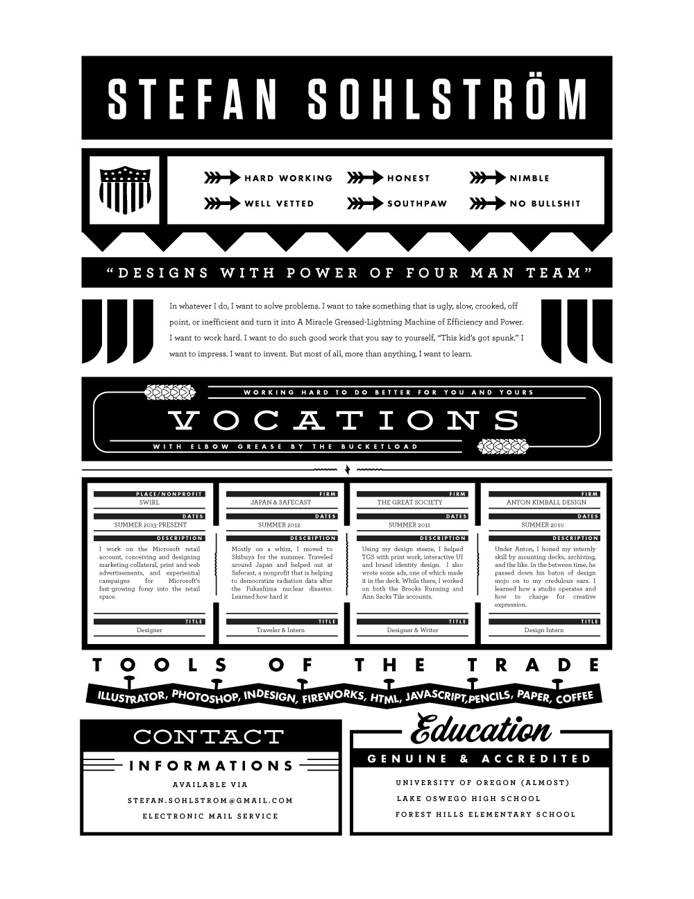
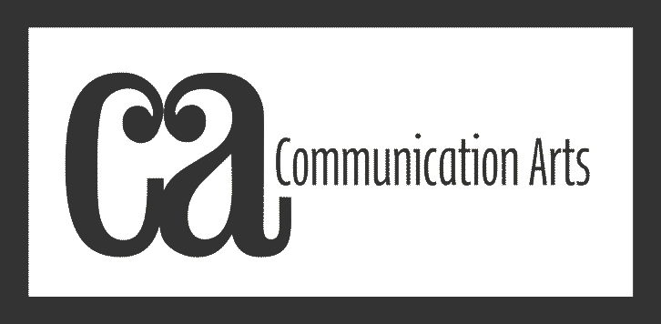
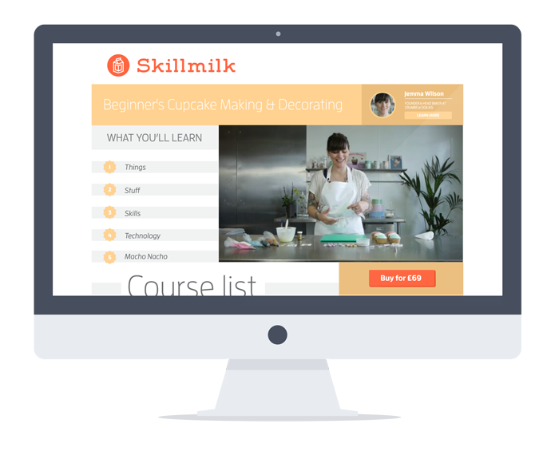
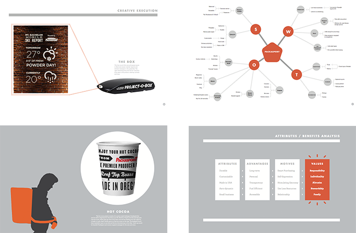

Instruction Manual:
Navigate using your arrow keys, space bar, or by clicking the buttons in the bottom right. If you're on a touch device, simply swipe.
Special Tip
For faster navigation, press the ESC key.
For happier navigation, grab a beer.
© Stefan Sohlstrom MMXIV | Contact
№1
Biography
➤
Stefan Sohlstrom is a UI designer, UX strategist, and bourgeoning front end developer. He is 24 years old and lives in the city of San Francisco. He is from Portland, Oregon (and misses it sometimes).
He is a recent graduate of the University of Oregon, where he studied Journalism with sprinkles of computer science and lit theory.
Besides writing about himself in the third person, he enjoys skiing steep surfaces for short distances and biking flat surfaces for long distances.
He is currently employed at a small, fierce startup called Plaid where he is the head of their one man design team.
Work history
-
Swirl
At Swirl’s offices in the Presidio, I work on the Microsoft retail account, conceiving and designing marketing collateral, print and web advertisements, and experiential campaigns for Microsoft’s fast-growing foray into the retail space. I’m learning what its like to work with big, multi-faceted brands with complex marketing goals.
-
Moonboots
In college my roommate and I started the Moonboots Corporation, a tiny creative agency with big dreams. Over the last year, we worked Moonboots projects after work and on weekends. It’s given the both of us tons of one-on-one client experience. We’ve learned that simply having a great idea isn’t enough–you have to sell it to the client. Moonboots recently finished its largest project to date, our responsive site for Rooster New York.
-
The Great Society
Worked at TGS for a couple summers. It’s the place where I’ve learned the most. Saw campaigns go from ideation to pitch to production. I primarily helped with design, but contributed some copy and concepts. Worked mostly on the Brooks Running and Sartori Cheese accounts.
-
Anton Kimball Design
Anton is quietly one of the most prolific designers in the nation. Under his tutelage I learned how designers seek out and study inspiration, and more about typefaces and lettering than any reasonable person should.
Education
-
University of Oregon
Received the Larry R. Williams scholarship and made the dean's list.
On the Daily Emerald's board of directors. BS in Advertising with some
computer science sprinkled in. -
Lake Oswego High School
All league in waterpolo and ski racing. Decent grades. ASB person.
-
Forest Hills Elementary School
Graduated with honors. Double major in wall ball and finger painting.
Commended for innovation in the Hand Painted Turkey space.
ResumÉ

№2
Rooster NY
➤
Challenge:
For years, agency Rooster New York worked tirelessly outputting tons of strong and fearless creative work. Problem was, all of this great content was hiding behind an aging web presence that was hard to use and harder to update.
Seemingly out of nowhere, a teeny-tiny agency called Moonboots (one part Stefan, one part Stefan’s roommate Jayson) pitched a complete overhaul of Rooster’s online identity.
After wooing them with initial wireframes and visual concepts, Rooster gave Moonboots a modest budget and a couple of months.
User experience
We began with a full audit of all of Rooster assets. From there we developed a hierarchy of needs for the content—identifying the raw video as the most important forward-facing part of the site. In UX flow documents and UI wireframes we mapped out how to get out of the way of the video content, and manage Rooster’s massive library. From there we moved to comprehensive mock-ups.

The result:

After countless late nights and long weekends the site finally went live on January 15th. After a couple of weeks of public exposure, Communication Arts did a little write up and honored us with their site of the day. It was called a Best About Page, and stayed on the front page of Designer News for a whole day. Read Rooster’s side of the story here.
№3
Microsoft
➤
The Job :
At Swirl’s offices in the Presidio, I work on the Microsoft retail account, conceiving and designing marketing collateral, print and web advertisements, and experiential campaigns for Microsoft’s fast-growing foray into the retail space. I’m learning what its like to work with big, multi-faceted brands with complex marketing goals.
№4
Skillmilk
➤
Challenge:
Skillmilk, an online education service, needed a look that matched the upmarket offerings found on their site.
I rebranded Skillmilk, using simple, recognizable geometric shapes. From the new identity, I designed a site that would align with the playful minimalism of the new Skillmilk brand.
the Mark
the site

№5
Packasport
➤
Challenge:
Packasport, a rooftop box maker, needed a way to compete with the likes of Thule and Yakima. And they needed to do it for only $10,000.
By targeting a small community like Bend using experiential (read: budget) tactics, our hope was to deliver a more concentrated message to a group of people who we believe are tastemakers for the actionsports community.
View the deck
Roles Played:
- Writer
- Art Director
- Designer
- Strategist
The result:
This was done for an advertising competition in University, so this is all spec work.
We got first place in the competition, and the client actually wanted to produce some of the ideas.
One of the group members is currently bringing some of them to life.
№6
Art while idle
➤
The end
Extra special thanks to Hakim El Hattab and his Reveal.js library, without which none of this website would have been possible. Checkout the framework on github.